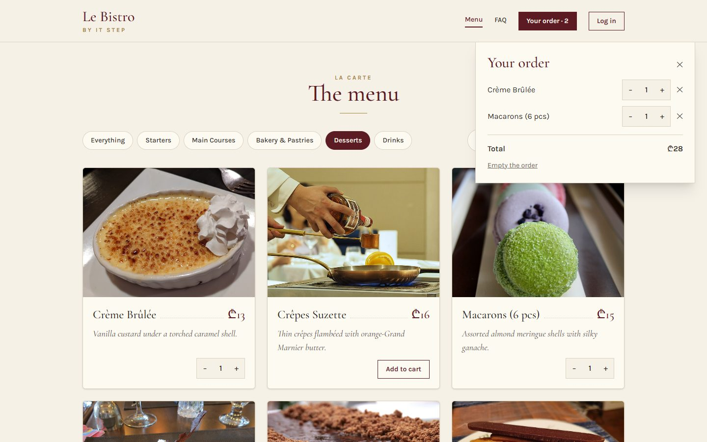
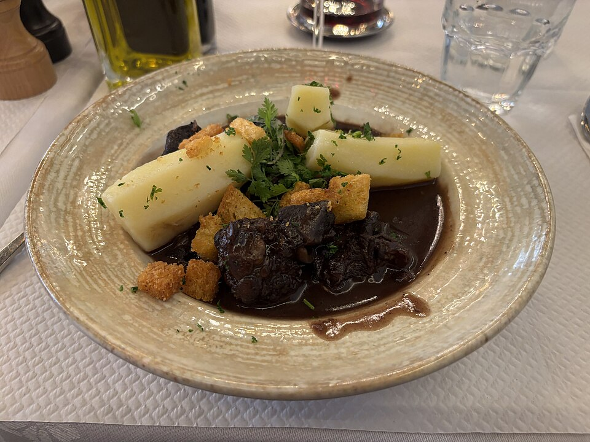

Bonjour!
L31 React · lecture 6 · Le Bistro track 5 of 5
Le
passe
The pass is the counter between the kitchen and the room. Plates are put there once, and every waiter picks up what they need. Nobody hands plates from person to person.
- Theme
- Context, useReducer, compound components
- Le Bistro today
- One cart, one session, an FAQ
- Your project
- v0.5 · context and a reducer
- Length
- 2 hours · one break
Le Bistro · L31 · 120 minutes
Today's menu
- AccueilHello where Le Bistro is today3′
- ApéritifQuestions and two homework demos9′
- EntréeProblem 1 passed hand to hand6′
- PlatContext one session for the whole site24′
- AtelierClasswork 1 your session, everywhere15′
- Pause caféBreak music on, screens off10′
- Second platProblem 2, useReducer, compound components too many cooks30′
- AtelierClasswork 2 one cart, one reducer15′
- DessertWrap-up recap, homework, what comes next8′
Route Lecture 5 of 5
Le Bistro, lecture by lecture

L27 · done
Components
Home page and menu from components and a data file.

L28 · done
State
Add to cart works. Chips filter, search finds.

L29 · done
Effects
The real menu from the API. A cart that survives a refresh.

L30 · done
Routing
Pages with their own address. Login and staff-only doors.

L31 · today
Context
One cart and one session for the whole site.
Today's goal Press next to unveil it
The same site, with half the wiring
Under the blind: App.tsx at the end of today. It was 87 lines.
- 39 lines, and not a single cart or session prop
- Every component asks for what it needs
- All the cart's rules in one function
- A new FAQ page from a reusable accordion
Apéritif Before we start
Questions from last time?
Routes, layouts, login, guards.
What does <Outlet /> do?
It marks the place in a layout where the current page appears.
Why <Navigate to="/login" replace />?
So Back doesn't return to the locked page, which would redirect to the login again.
Does RequireAuth protect the kitchen?
It's a sign on the door. The lock is the API: 401 without a token, 403 with the wrong role.
Homework check Two volunteers, two minutes each
Show us your v0.4
Open a product, copy its link into a new tab. Log in, press F5. Open /profile as a guest.
Look for
- A product link opens that product
- F5 on the Vercel link: no 404
- Still signed in after F5
- A guest on /profile goes to the login, then back
- No password in Local Storage
Entrée · Problem 1 Before the new tool
Passed
hand
to hand.
43 props in 8 files, only to move one cart and one session to the few components that need them.

Problem 1 Press next, or click a prop
Follow the props through Le Bistro
43 props carry the cart and the session through 8 files. Pick one.
Problem 1 Your turn
What would we need?
Plat · Solution 1 Press next
Hand to hand, or the pass
Solution 1 The whole idea in three lines
Context in three parts
createContext makes a place for one kind of value. null is what you get outside any provider.
The provider: every component inside it can reach the value. React 19 writes <AuthContext>; older code writes <AuthContext.Provider>.
useContext in any component inside, at any depth. When the value changes, that component re-renders.
Solution 1 · Recipe Type it with me
The pass for the session: AuthContext.ts
- What is on the passThe session, and the two ways to change it.src/auth/AuthContext.ts
- Build the pass
nullmeans "no provider above me". - A hook to pick it upIt fails loudly if someone forgot the provider.
Solution 1 · Recipe The session moves out of App
Put the session on the pass: AuthProvider.tsx
- The session moves hereCut the line from App, paste it here. Same key: nobody gets signed out.src/auth/AuthProvider.tsx
- The valueThe session and the two actions.
- Wrap the childrenWhatever is inside gets the value.
- Wrap the whole appInside BrowserRouter, around App.src/main.tsx
Solution 1 · Recipe Now delete props
Read the session anywhere
- Header
sessionandonLogoutleave its props, and SiteLayout's.Header.tsx - The guard and the loginOnly
rolesis left on RequireAuth.RequireAuth.tsx, LoginPage.tsx - The pagesAccountPage and KitchenPage take
sessionandlogoutfrom the hook. - App lets goNo session state, no session props. TypeScript underlines every leftover.App.tsx
Solution 1 Click the buttons, watch the counters
Who re-renders when the value changes?
The rule
Every component that reads a context re-renders when its value changes. Keep contexts small and split them by topic.
Solution 1 Ask in this order
Is context the right tool?
Solution 1 The errors you will see today
When context goes wrong
A reader outside the provider
Context and provider in one .tsx file
Everything in one context
Local state in context
Quick check The pass
Which component can call useAuth()?
The provider covers everything rendered inside it, however deep. Importing the context is not enough: outside the provider you get null, and our hook throws.
Atelier · Classwork 1 15 minutes, on your own project
Your session, everywhere
An auth context
auth/AuthContext.ts: the type,createContext,useAuth().auth/AuthProvider.tsx: the session fromuseLocalStorage,login,logout. Wrap the app in main.tsx.- Header, LoginPage, ProfilePage and RequireAuth call
useAuth(). Delete the session props.
A theme
- A
ThemeContextwith"light" | "dark"and a toggle in the Header.
A theme that remembers
- It survives F5 and starts from the system setting (
prefers-color-scheme).
Done when
- Searching the project for
session=finds nothing - Login, F5: still signed in
- Sign out from the Header works
- The guard still sends guests to /login
Stuck?
export function AuthProvider({ children }: { children: ReactNode }) {
const [session, setSession] = useLocalStorage<Session | null>("shop.session", null);
const value = { session, login: setSession, logout: () => setSession(null) };
return <AuthContext value={value}>{children}</AuthContext>;
}Pause café 10 minutes
Pause café
After the break: too many cooks in the cart.
Second plat · Problem 2 A new wish from the chef
Too many
cooks.
"Add a button that orders the usual: three dishes at once." Simple? The cart's rules are spread over four files, and the new button knows none of them.

Problem 2 Add Coq au Vin, then press "Order the usual"
The new button breaks the cart
Your order
Problem 2 Every cook has a different recipe
Where do the cart's rules live?
"remove a line at 0"
changeQty filters out lines with 0. addToCart just appends.
"no duplicate lines"
Only because the card hides "Add to cart" once the dish is in the cart.
"never more than 10"
Only because the stepper disables its + button.
"nothing off the menu"
Only because the card disables the button.
Solution 2 How a kitchen takes orders
The ticket rail: useReducer
The deal
Components only describe what happened. One pure function decides what the new cart is. That function is the only cook.
Solution 2 A pure function
A reducer in four parts
The cart as it is before this ticket.
An object with a type: { type: "added", dish }.
The rules of each kind of change.
A new array, never a changed old one. No fetch, no localStorage inside.
Solution 2 Send tickets, watch the chef
Run the tickets through the reducer
Solution 2 · Recipe Type it with me, part 1 of 2
The tickets and the first rule: cartReducer.ts
- Name every changeOne type per ticket. TypeScript rejects a typo like
"add".src/cart/cartReducer.ts - One rule, one placeThe stepper imports
MAX_QTYfrom here. - The chefCart and ticket in, new cart out. A
switchon the type. - "added"Off the menu? Nothing changes. Already there? One more, up to 10. Otherwise a new line.
Solution 2 · Recipe Part 2 of 2
The other three tickets
- "qtyChanged"+1 or −1, never above 10, and gone at 0.
- "removed" and "cleared"The ✕ on a line, "Empty the order".
- Try it without a screenIt's a plain function: call it in the console or a test.
Solution 2 · Recipe The same three parts as before the break
The pass for the cart: CartContext.ts
- What the pass offersThe lines, what we calculate from them, and named actions. Components never see
dispatch.src/cart/CartContext.ts - Build the passExactly like AuthContext.
- The hook
useCart(), loud when the provider is missing.
Solution 2 · Recipe The reducer moves in, part 1 of 2
The cart provider: state and saving
- Read the saved cart onceA plain function for the first state.src/cart/CartProvider.tsx
- useReducerThe reducer, a start value, and
loadCartto compute it lazily, only on the first render. - Save after every changelocalStorage is the outside world: an effect, never inside the reducer.
Solution 2 · Recipe Part 2 of 2
The cart provider: what goes on the pass
- The data, and what we calculate from itcount, total and qtyOf are derived on every render: never stored.
- Named actionsEach one writes a ticket.
- On the passSame as the auth provider.
- Wrap the appBoth providers around App.src/main.tsx
Solution 2 · Recipe The great prop deletion
Read the cart anywhere
- DishCard asks the cart itselfIts props shrink to
dish.DishCard.tsx - Header and CartPanelThe count, the lines, the total, and a new "Empty the order".Header.tsx, CartPanel.tsx
- The new button"Order all three" sends three tickets. No duplicates.Favourites.tsx
- Delete, delete, deleteDishGrid, Favourites, the pages, SiteLayout, App: no cart props left. App: 87 → 39 lines.
Solution 2 Context in the small: click the questions
Parts that work together: the FAQ
Like <select> and <option>: parts that only make sense together, sharing state through a small private context.
Solution 2 · Recipe Copy the file, read these parts
Inside Accordion.tsx
- Two small contextsNot exported: only the parts can use them.src/components/Accordion.tsx
- Accordion owns the stateWhich item is open. Click the open one again to close it.
- AccordionItem tells its parts who they are
<ItemContext value={{ value, isOpen, panelId }}>around its children;panelIdcomes fromuseId(). - Trigger and Panel only readThe panel hides itself when its item is closed.
Solution 2 The bugs of the second half
When a reducer goes wrong
Changing the old cart
A forgotten return
A typo in the ticket
Side effects in the reducer
Solution 2 Le Bistro, version 0.5
The whole picture

Full code: bistro-track/code/after-L31. The Le Bistro track is complete; from L32 on, the course builds on this shape.
Quick check The chef's rules
Which line may go inside a reducer?
A reducer only calculates a new state from the old state and the action. Saving and fetching are side effects (an effect or an event handler). Pushing changes the old array, so React sees no change.
Atelier · Classwork 2 15 minutes, on your own project
One cart, one reducer
A cart reducer
cart/cartReducer.ts:added,qtyChanged,removed,cleared. No duplicate lines, never more than the product'sstock, gone at 0.- Use it in your App first:
const [cart, dispatch] = useReducer(cartReducer, []).
A cart provider
CartContext.ts+CartProvider.tsx+useCart(). Saved in localStorage. No cart props left.
An accordion
- A compound
Accordionon the product page: description, shipping, returns, reviews.
Done when
- The same product twice: one line, qty 2
- Never more than in stock
- No
push,spliceorlocalStoragein the reducer - F5 keeps the cart
Stuck?
switch (action.type) {
case "added": { /* in cart? +1 : new line */ }
case "qtyChanged": return cart.map(…).filter(…);
case "removed": return cart.filter(…);
case "cleared": return [];
}Dessert What we solved today
Two problems, two tools, one pattern
Problem 1
The cart and the session passed hand to hand: 43 props in 8 files.
Context
createContext, a provider around the app, useAuth() / useCart() anywhere inside.
Problem 2
The cart's rules spread over four files; a new button broke them.
useReducer
Tickets describe what happened; one pure function holds every rule.
Bonus
A component made of parts: the FAQ accordion.
Compound components
The parts share state through a small private context.
Dessert Click a card to check yourself
What does this do?
Builds the pass. Outside any provider, readers get null.
The provider: everything inside it can read value.
Reads the cart from context. Re-renders when it changes.
State managed by a reducer. loadCart computes the first state once.
Puts a ticket on the rail. The reducer decides the new cart.
One part of a compound component. Its Trigger and Panel know it.
Homework Before L32
Your shop, version 0.5
Context and a reducer
AuthProvider+useAuth(): no session props anywhere.CartProviderwithuseReducer+useCart(): no cart props anywhere.- The reducer holds every rule: no duplicates, never more than
stock, gone at 0, cleared. - The cart survives F5; "Empty the cart" works.
A compound component
- An
Accordion(orTabs) built from parts with a small context. Use it on the product page or an FAQ page.
Before you submit
- Search for
cart=andsession=: nothing - The same product twice: one line
- The reducer has no side effects
npm run buildpasses
Full brief and grading: homework.md.
Le Bistro track Complete
Five lectures, one restaurant
L27
Components
JSX, props, lists and keys.
L28
State
useState, events, lifting state, derived values.
L29
Effects
useEffect, fetching, custom hooks, useRef.
L30
Routing
Pages, params, login, guards.
L31
Context
Context, useReducer, compound components.
L31 Le passe
Merci!
Questions now, or in the class chat. See you at L32.